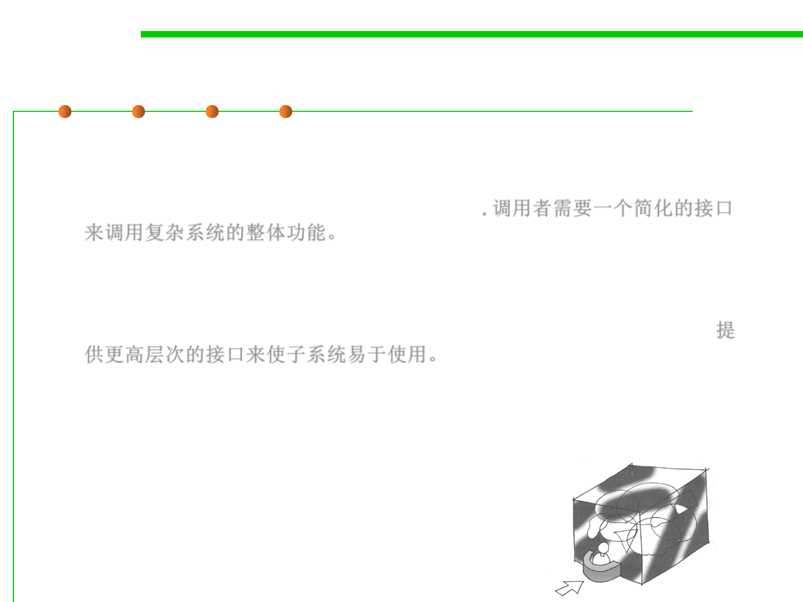

Façade [fəˈsɑːd] 外观模式
5.3 Design Patterns for Reuse
▪ Problem
– A segment of the client community needs a simplified interface to the
overall functionality of a complex subsystem. 调用者需要一个简化的接口
来调用复杂系统的整体功能。
▪ Intent
– Provide a unified interface to a set of interfaces in a subsystem. Facade
defines a higher-level interface that makes the subsystem easier to use. 提
供更高层次的接口来使子系统易于使用。
– Wrap a complicated subsystem with a simpler interface.
▪ This reduces the learning curve necessary to successfully leverage
the subsystem.
▪ It also promotes decoupling the subsystem from its potentially
many clients.
▪ 简单窗口